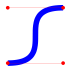
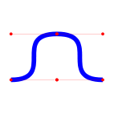
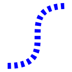
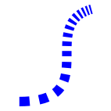
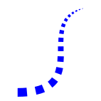
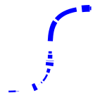

In XRVG, Bezier objects are cubic bezier curves, that can be drawn or used as a mean to computation.
Basically, bezier curves are defined by four vector parameters:
Once these parameters are specified, you can get the folowing result:
|
 |
require 'xrvg' include XRVG render = SVGRender[ :filename, "bezierbasic.svg" ] bezier = Bezier.raw( V2D[0.0, 1.0], V2D[1.0, 1.0], V2D[0.0, 0.0], V2D[1.0, 0.0] ) render.add( bezier, Style[ :stroke, "blue", :strokewidth, 0.1 ] ) bezier.gdebug( render ) render.end |
XRVG provides several ways to specify these parameters:
This is the way of the previous example:
|
|
require 'xrvg' include XRVG render = SVGRender[ :filename, "bezierbasic.svg" ] bezier = Bezier.raw( V2D[0.0, 1.0], V2D[1.0, 1.0], V2D[0.0, 0.0], V2D[1.0, 0.0] ) render.add( bezier, Style[ :stroke, "blue", :strokewidth, 0.1 ] ) bezier.gdebug( render ) render.end |
Parameters are:
Sometimes, it is easier to see control points as vectors, since specifying vectors is relative to first and last points. As a consequence, curve points provide localization of the curve, while vectors provide shape.
Furthermore, vector bezier specification is sequential: each point of the curve (first or last) is followed by its vector.
Parameters are then:
|
|
require 'xrvg' include XRVG render = SVGRender[ :filename, "bezierbasicvector.svg" ] bezier = Bezier.vector( V2D[0.0, 1.0], V2D[1.0, 0.0], V2D[1.0, 0.0], V2D[-1.0, 0.0] ) render.add( bezier, Style[ :stroke, "blue", :strokewidth, 0.1 ] ) bezier.gdebug( render ) render.end |
In the example, the symetry of the two vector shapes is clear, which was not the case in previous raw example.
Bezier curves are quite powerful, but in order to draw interesting and controlled shapes, it is often required to define a curve made of several concatenated bezier subcurves.
XRVG allows multibezier curves definition as in the following example:
|
 |
require 'xrvg' include XRVG render = SVGRender[ :filename, "multibezierbasic.svg" ] bezier = Bezier.multi( [[:vector, V2D[0.0, 1.0], V2D[1.0, 0.0], V2D[1.0, 0.0], V2D[-1.0, 0.0]], [:vector, V2D[1.0, 0.0], V2D[1.0, 0.0], V2D[2.0, 1.0], V2D[-1.0, 0.0]]] ) render.add( bezier, Style[ :stroke, "blue", :strokewidth, 0.1 ] ) bezier.gdebug( render ) render.end |
Note: this section will be soon updated, to describe some more powerful ways to describe multibezier curves, in particular when they are "regular"
To illustrate XRVG samplation advantages, let's discuss dashing a bezier curve.
For the moment, the simpler way to do dashing with XRVG is the following:
|
 |
require 'xrvg' include XRVG render = SVGRender[ :filename, "simpledash.svg" ] bezier = Bezier.raw( V2D[0.0, 1.0], V2D[1.0, 1.0], V2D[0.0, 0.0], V2D[1.0, 0.0] ) bezier.splits( 30 ).foreach do |drawn,dummy| render.add( drawn, Style[ :stroke, "blue", :strokewidth, 0.1 ] ) end render.end |
That is :
A far more interesting example is to use some sample filter to add pattern on dash.
As an example:
|
 |
require 'xrvg' include XRVG render = SVGRender[ :filename, "geodash.svg" ] bezier = Bezier.raw( V2D[0.0, 1.0], V2D[1.0, 1.0], V2D[0.0, 0.0], V2D[1.0, 0.0] ) bezier.geo(2.0).splits( 30 ).foreach do |drawn,dum| render.add( drawn, Style[ :stroke, "blue", :strokewidth, 0.1 ] ) end render.end |
Combining with radius decreasing yields to a quite interesting result:
|
 |
require 'xrvg' include XRVG render = SVGRender[ :filename, "geodash2.svg" ] bezier = Bezier.raw( V2D[0.0, 1.0], V2D[1.0, 1.0], V2D[0.0, 0.0], V2D[1.0, 0.0] ) [bezier.geo(2.0).splits( 30 ), (0.1..0.0).samples(30)].forzip do |drawn,width,dum,dum| render.add( drawn, Style[ :stroke, "blue", :strokewidth, width ] ) end render.end |
As a note, iteration in previous example should be improved in future XRVG releases.
As a random try:
|
 |
require 'xrvg' include XRVG render = SVGRender[ :filename, "randomdash.svg" ] bezier = Bezier.raw( V2D[0.0, 1.0], V2D[1.0, 1.0], V2D[0.0, 0.0], V2D[1.0, 0.0] ) [bezier.ssort.random.splits( 30 ), (0.1..0.0).rand(30)].forzip do |drawn,width,dum,dum| render.add( drawn, Style[ :stroke, "blue", :strokewidth, width ] ) end render.end |